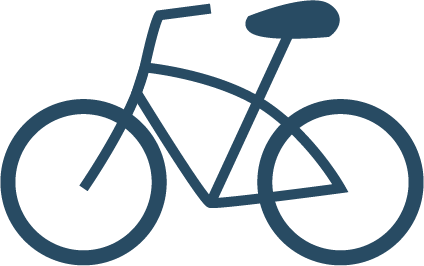

Overview
Purpose
It’s no question that getting in shape is hard and staying in shape can be even harder. Just the thought of choosing a diet or an exercise plan is enough to make you want to quit before you even get started. I know, I’ve been there; but now there’s a solution. A one-stop app where you can choose from a variety of training plans based around your specific goals and approved by certified professionals. Your plan will assign you consistent activity, guide your nutrition, and track your progress. Getting in shape shouldn’t take over your life, it should give you your life back. My webpage will be your source to learn more about the benefits of this new app and how it works.
Feedback (based on my original idea of just a website with these resources):
The idea is good and can have a big influence on how people view living healthy, but I think it would be more effective as an app. Your webpage can act as a landing page or homepage describing the app and offering potential users a chance to get to know it before they try it.
Audience
The audience will be males and females from the ages of 18 to 35, though it can apply to an even wider range. In particular, these individuals will be people who are looking to better themselves or maintain a healthy lifestyle. We hope to be a valuable resource to them as they try to find an affordable way to train and improve. They may have questions about how much should they workout each day or where to focus their efforts. They may not know what to eat or when to eat it. They may feel anxious about trying to keep track of everything they're doing and what progress they might be making. We hope to answer all of these questions.
Branding
Website Logo
Style Guide
Color Palette
Palette URL:https://coolors.co/b4b8ab-153243-284b63-f4f9e9-eef0eb
| Primary | Secondary | Accent 1 | Accent 2 |
|---|---|---|---|
| #435F4C | #7CA9A9 | #3B595C | #EDEEF0 |
Typography
Primary Font: Brandon Grotesque
Brandon Grotesque is a popular font today due to its legibilty and modern asthetic. It adds some subtle flair and personality to the overall look of th site.
Paragraph Font: Brandon Grotesque
Brandon Grotesque will also be used for the paragraphs, although the typeface's weight will vary from that of the headlines.
Imagery

Navigation
Home
The Home page will be the main source of information about our services and benefits. The page may include a selection of user testimonials to motivate visitors to try the product.
About Us
The About Us page will explain more about the app's mission and goals. We want to be transparent with visitors about what keeps us motivated and working towards our goals.
Blog
The Blog will be a place for users to share their experiences and achievements, as well as a place to find healthy recipes and nutrition advice.